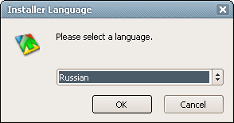
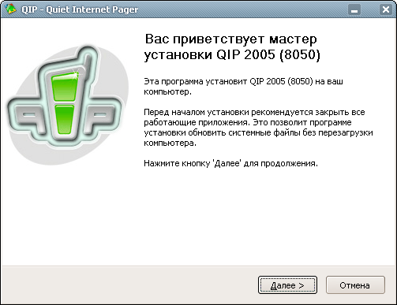
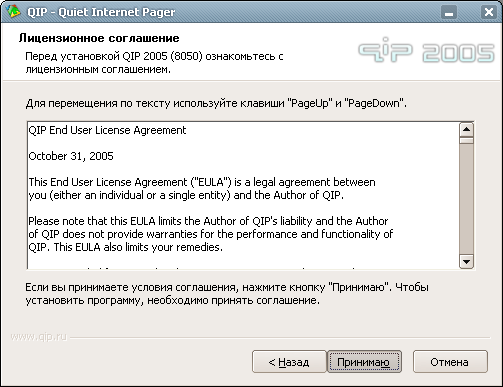
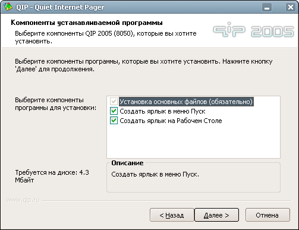
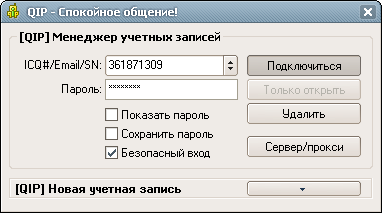
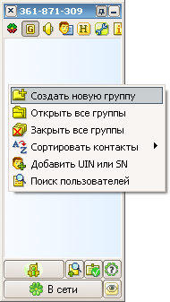
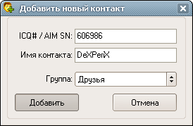
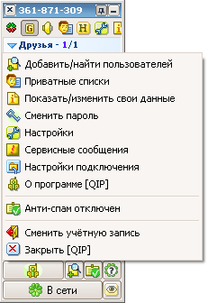

Установка и настройка ICQ-клиента QIP
Для начала QIP нужно скачать. Для этого идём на сайт http://qip.ru. Находим в меню сверху "Скачать". Наводим. Выбираем "QIP":

На странице скачивания выбираем инсталлятор (установочный файл). Кликаем на него:

Браузер спросит, куда сохранить файл. Например, можно в корень диска D или C, а ещё лучше в место, где у Вас хранятся все установочные файлы. Далее нужно запустить этот файл. Для этого переходим (в проводнике) в папку с сохранённым qip'ом и 2 раза кликаем по нему левой клавишей мыши. Появится запрос выбора языка установки:

Соглашемся с предложенным вариантом (русский язык) и кликаем "ОК".
Далее видим окно привествия мастреа установки:

Внимательно читаем текст приветствия и кликаем "Далее". При приведёт нас в окно лицензионного соглашения, которое тоже желательно прочитать:

Принимаем его и переходим к окну выборов компонентов программы.

Набор по умолчанию нас устраивает. Кликаем "Далее". Это переводит нас в окно выбора пути установки:

Если путь "C:\Program Files\QIP" Вас чем-то чем-то не устраивает, выберите другой путь. После жмём "Установить".
Как видите, установка QIP прошла довольно быстро. После неё появляется последнее окно установщика:

Лично я не захотел менять свою домашнюю страничку, поэтому убрал эту галочку. Но с первым запуском QIP откладывать не будем! 
Итак, первое окно при запуске QIP именно то, в которое Вы должны ввести свой UIN и пароль:

Если пароль вводить сложно, то можно на время включить галочку "Показать пароль". Галочку "Безопасный вход" включить очень желательно.
После того, как пароль и UIN корректно введены, можно нажимать кнопку "Подключиться". Не забывайте, что Вы должны быть пдключены к интернету, чтобы подключение прошло успешно 
После всего этого появится главное окно QIP, пока достаточно пустое. Но именно в него Вам нужно будет заносить своих друзей. Поверьте, когда контакт лист расширяется до человек 100-200 он не кажется таким уж пустым! 
А чтобы добавить человека, Вам нужно добавить его в какую-либо группу. Например, в группу "Друзья". Но для начала её нудно создать:

Для этого кликаем по пустому месту контакт листа правой кнопкой мыши и выбираем "Создать новую группу".
Далее вводим имя новой группы:

И нажимаем "ОК". Всё, группа создана! Теперь можно добалять в неё своих друзей:

Для этого кликаем правой кнопкой мыши по свежесозданной группе и выбираем "Добавить UIN или SN". Появляется окно добавления друга:

Здесь нужно ввести UIN Вашего друга, его короткое имя (ник) и выбрать группу, в которую он будет добавлен.
Теперь уже можно кликнуть правой кнопкой мыши по Вашему другу, и посмотреть доступные опции. Например, когда-нибудь Вам понадобится запросить у человеку авторизацию. Она находится именно в этой менюшке:

Также, возможно, вы захотите покопаться в настройках программы или совершить ещё какое-нибудь интересное действие. Для этого можно вызвать главное меню программы:

Для этого нужно кликнуть на большую кнопку с пиктограммой qip, находящейся над Вашим статусом.
Ну, и чтобы начать общаться с человеком, достаточно по нему дважды кликнуть. Общение выглядит примерно так:

Ну вот Вы и научились использовать QIP. Теперь даже такие ужасные слова, как "ICQ", "UIN" , "авторизация" Вам не страшны, ведь у Вас есть своя аська! 
Счастливого чаттинга!